Letting shoppers scan and pay with their own phone, without queueing at the till
The problem
Shoppers had to choose between carrying a store scanner and standing in a queue. Both were real barriers, especially for parents and people with accessibility needs.
What I did
Led the design from research to launch, working with the PM and engineering team. I tested in office workshops and in a live store before launch, and ran an A/B test with real shoppers after launch.
Key decisions
Result
checkout completion
In an A/B test after launch, checkout completion rose by 40% with scan feedback. Usability testing before launch also showed about 30% better checkout task performance, and sign-up abandonments dropped from 3 to 0. The app has launched; adoption is still early.
Part of the Focalpay platform: this app connects to the Cashier POS for cash payments and to the Back-office for products and prices.
For retailers, the whole idea depends on one thing: shoppers finishing checkout on their own phone. Every shopper who gives up halfway ends up back in the queue, or leaves without paying for what's in their cart.
In Swedish grocery stores like ICA and Coop, self-scanning means carrying a store scanner around, or standing in the queue at the till. Focalpay's app turns the shopper's own phone into the scanner.
Shoppers scan as they go. Signed-in shoppers check out in the app, while guests scan the checkout QR code at the cashier area. Shoppers who want to pay with cash send their cart to the cashier.
It had to work with no new hardware, support cash, and let the store confirm payment at the exit without slowing honest shoppers down.
The one question
So every decision had to answer one question:
does the shopper finish checkout on their own phone?
My role
I started with competitors, checked the problem with shoppers before designing anything, and tested in two very different settings. Four findings shaped the work:
How competitors do it
Persona
Persona quote, synthesised from interviews.
Each finding pointed to a design direction:
User journey
| Stage | Action | Emotion | Pain point | Design response |
|---|---|---|---|---|
App open |
Opens app, camera activates immediately | Confident | None. No forced sign-up, and the camera starts straight away | Camera opens first, so there's nothing to get through |
Scanning products |
Scans barcodes while shopping, one hand on stroller | Engaged | Not sure if the scan worked | Visual, haptic and sound feedback on every scan |
Unreadable barcode |
Tries to scan damaged barcode, camera fails | Frustrated | The first version had no way forward, so the shopper got stuck | Manual barcode entry, added after usability testing found the problem |
Baked goods |
Taps “Baked goods” for items without scannable codes | Relieved | Baked goods often don't have a barcode | Own category, one tap from the home screen |
Cart review |
Reviews cart, adjusts quantities, checks total | In control | Wants to check everything before paying | Cart always visible on the home screen |
QR checkout |
Taps “Go to payment”, scans the checkout QR at the cashier area from a distance | Delighted | Expected a queue, and was surprised the checkout QR code at the cashier area worked from 10 m away | Large checkout QR code at the cashier area that can be scanned from a distance |
Payment |
Pays via Apple Pay, card scan, Swish, or cash transfer | Satisfied | Needs to enter card details now, since there was no sign-up at the start | Card scan with the camera or manual entry, and several ways to pay |
Exit gate |
Scans exit QR from receipt screen at store gate | Confident | Wants to be sure the payment went through | Clear exit QR code on the receipt screen; the gate opens |
The low points were a damaged barcode and not knowing if a scan had worked. The high point was scanning the checkout QR code at the cashier area from a distance.
These four decisions shaped the core flow before launch.
Decision 1 · Four steps before the first scan
A short, skippable carousel explains the store flow in four plain steps: scan, pay, get the receipt and exit.
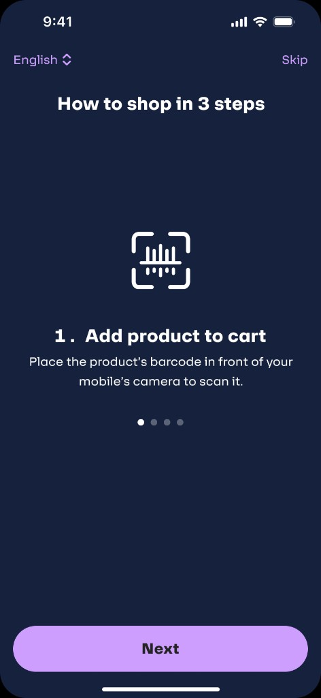
Step 1 · Add product to cart
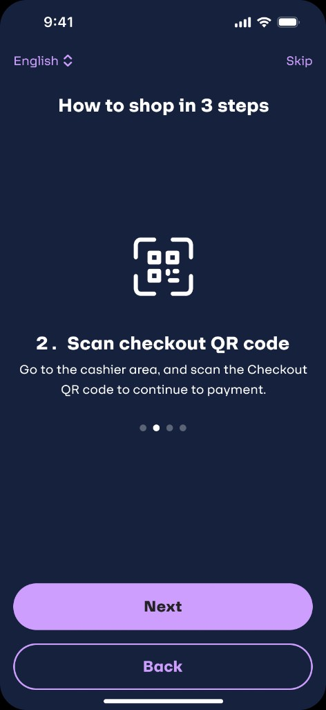
Step 2 · Scan checkout QR
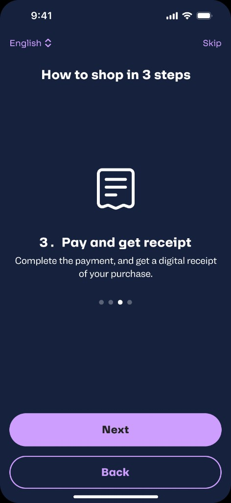
Step 3 · Pay and get receipt
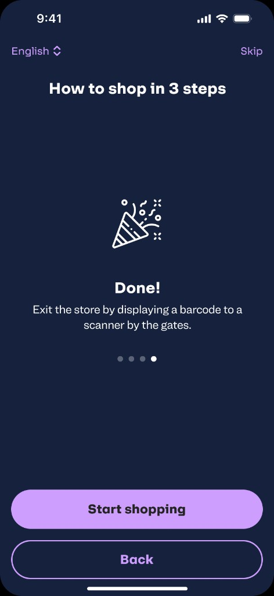
Step 4 · Done — start shopping
Decision 2 · A camera-first home for one free hand
When the app opens, the camera is already on and the cart is visible, so the phone is the only device a shopper needs. Shortcuts cover what scanning can't: a bag, a Baked goods category for items without barcodes, and manual barcode entry for damaged ones.
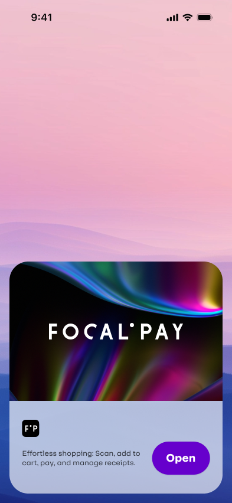
Splash
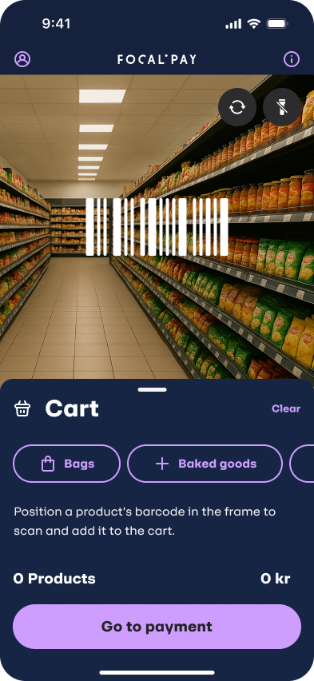
Empty cart, camera ready
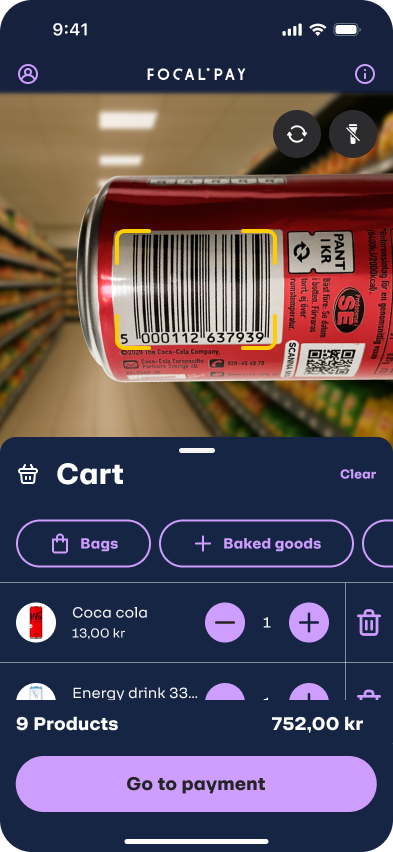
Scanner + cart
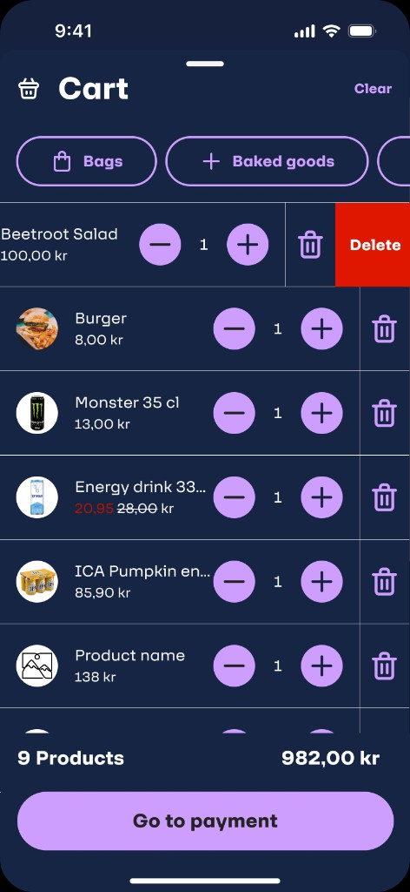
Full cart, swipe to delete
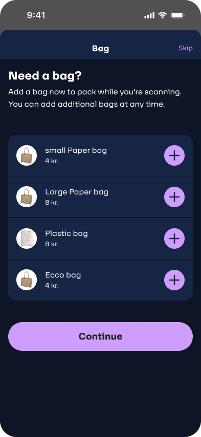
Add bag
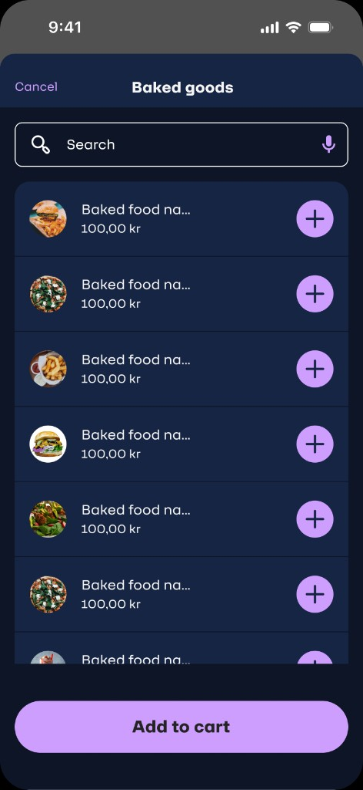
Baked goods category
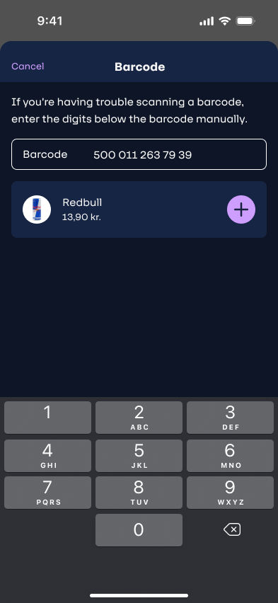
Manual barcode entry
Decision 3 · Two ways to check out, no forced sign-up
The first version asked shoppers to create an account before they could shop, and three testers gave up right there. So I designed two paths: shoppers who sign up can check out straight from the app, while those who skip sign-up scan the checkout QR code at the cashier area to connect their cart to checkout. It can be scanned from up to 10 metres away. In the next round, nobody gave up, and one participant chose to sign up.
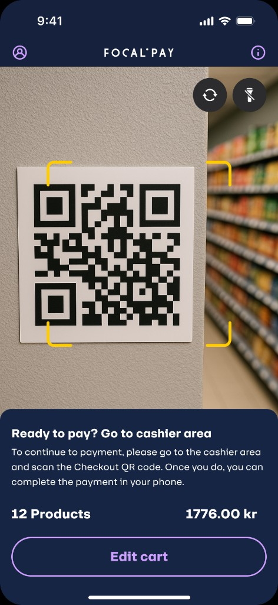
Guests scan the checkout QR code at the cashier area to continue to checkout.
Decision 4 · Payment, receipt and exit
Shoppers see a payment summary and pay with card, Apple Pay, Swish or cash; cash users send their cart to the nearest cashier with one tap. When payment is complete, the phone shows a barcode to open the exit gate, so the store can confirm payment without slowing honest shoppers down. The receipt and every past purchase are saved in the app.
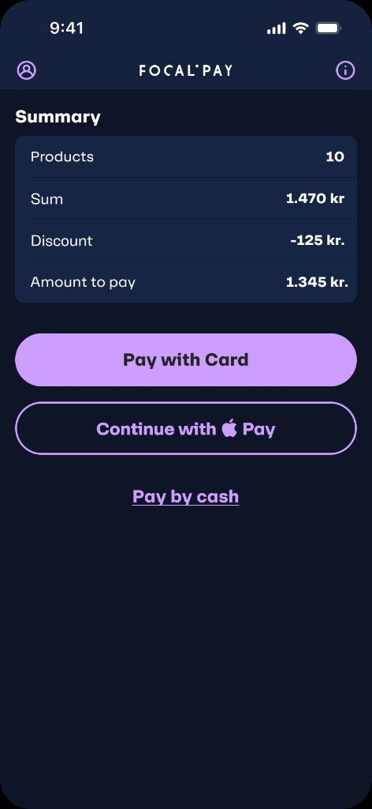
Payment summary
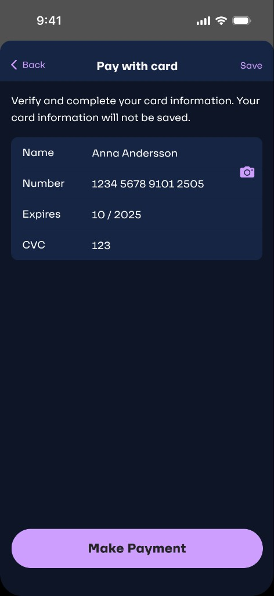
Add card
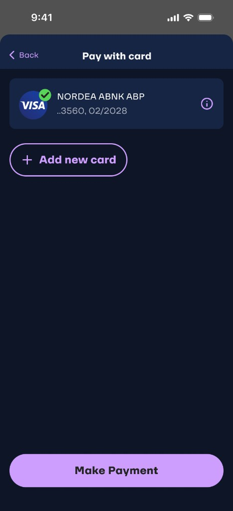
Card on file
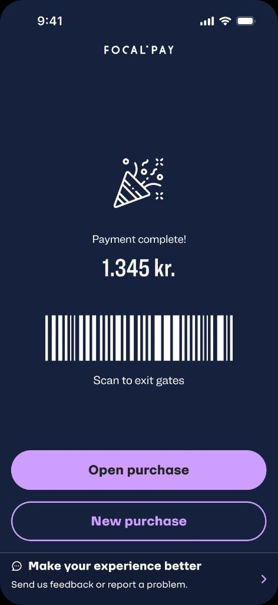
Payment complete, with the exit barcode
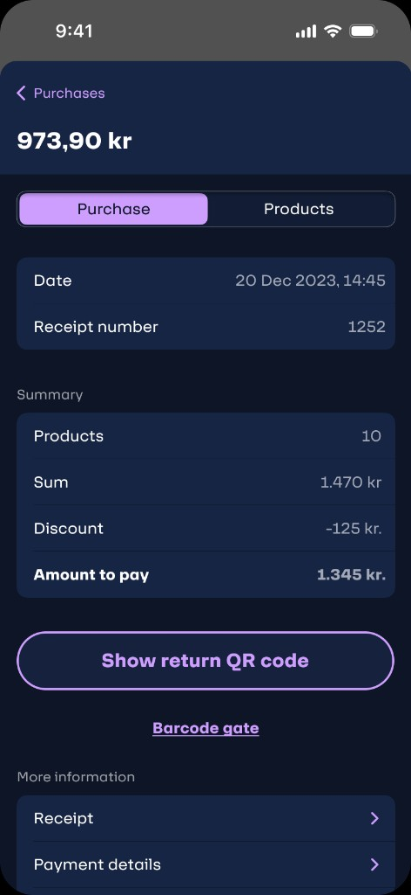
Purchase detail
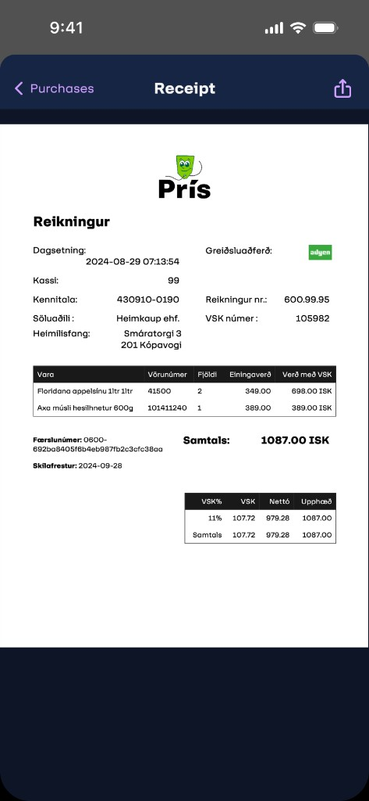
Digital receipt
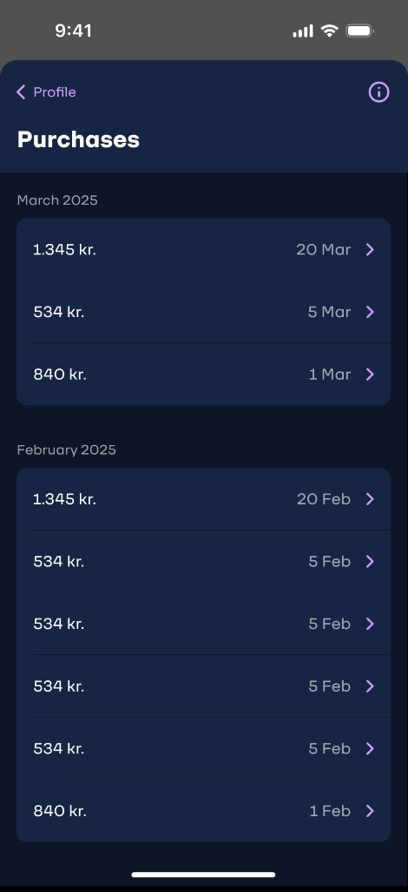
Purchase history
Click through the prototype to scan, add products to the cart and check out like a shopper would.
The scanner is too slow
The app is too silent
After launch, I reviewed shopper behaviour with my PM. Many shoppers started scanning but never completed checkout. My first guess was the scanner, so the dev team optimised it, but the drop-off didn't go away.
So I went back to testing, and found the real problem: shoppers scanned a product, then stared at the screen, unsure if it had worked. Some scanned twice. With noise, trolleys and children around, a visual sign alone was easy to miss.
The aha moment
Shoppers didn't need a faster scanner. They needed to know the scan had worked.
So every scan now gives three kinds of feedback: the product moves into the cart, the phone vibrates and a short sound plays, following the WCAG guidance that a change shouldn't rely on one sense.
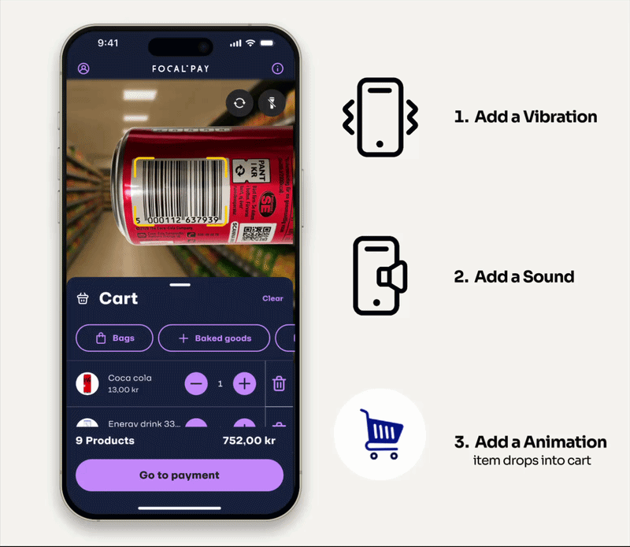
In an A/B test after launch, with 10 real shoppers (5 on the silent version, 5 with feedback), checkout completion was 40% higher.
Before launch, I tested the app in office workshops and in a real store. After launch, shoppers were giving up while scanning, which led to the scan feedback in the turning point, and an A/B test with 10 real shoppers measured its effect.
+40%
checkout completion (A/B test after launch, 10 shoppers)
~30%
better checkout task performance (usability testing before launch, in-store session vs. the earlier round)
3 → 0
abandonments at sign-up (usability testing before launch)
10 m
QR checkout range (tested in a real store before launch)
“I used to dread grocery shopping with the kids. Now I just open the app, scan as I go, and I'm done before I even reach the exit.”
— Usability test participant, in-store sessionThe app has launched, and adoption is still early. Next, I'd track guest checkout versus sign-ups, checkout completion, manual barcode entry and cash handovers.